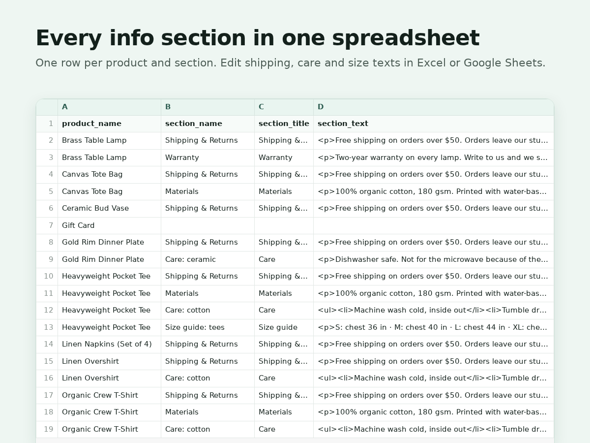

Info Sections: CSV Export
Export and import product info sections as CSV
- Export every product's info sections to CSV
- Edit in a spreadsheet, import with a dry run
- Give one product its own care or size text
- Undo any import with its saved before file

What it does
The new product catalog dropped info sections from the store's CSV export. Shipping notes, care text and size guides now get edited one product at a time. This app puts them back in a spreadsheet.
Export writes one row per product and section: product, section name, title and text. The text keeps its formatting as simple HTML, and plain text works too. Edit it in Excel or Google Sheets and load it back.
Before anything is saved, a dry run lists every change: sections added and removed per product, each text before and after, and how many products share each edited section. Sections are shared, so a new text on all of a section's rows updates it everywhere, while a new text on a few rows gives those products their own copy. Row order sets the order on the product page.
Every import keeps an undo file with how the changed products looked before, and Undo puts them back.
The free plan exports everything and imports up to 25 changed products at a time. Premium imports any size and adds or removes a section on every product in a category in one go.
It works with the new product catalog (Catalog V3). On the earlier catalog the store's own export still has these columns.
Price
Free
- Export all info sections to CSV
- Import up to 25 products at a time
- Dry run before every import
- Undo file for every import
Premium
$6/month, or $4.80/month billed yearly (20% off)
- Imports of any size
- Add or remove a section by category
- Dry run and undo on every change
- Everything in the free plan